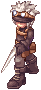
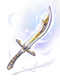
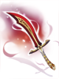

Heart Hunter War Base
| This quest or instance is repeatable. | ||
|---|---|---|
| Cooldown | Tickets Available | |
|
Resets at 0:00 |
Solo: 0 | Party: 0 |
| Requirements | |
|---|---|
| Base Level: | 100 |
| Starting Point: | Julian |
| Prerequisite(s): | Terra Gloria (Heart Hunter War Base 1) |
| Rewards | |
| Experience: | 25000000 |
| Items: | None |
Overview
The Heart Hunter War Base is part of the Episode 16.2, check out Terra Gloria for more information.
On NovaRO parties with more than one member can join the instance. The limit to a single member was removed.
Daily quests
The reward for this quest comes from Elders Party Preparations.
Enemies
| Image | Name | Level | HP | Size / Race / Element |
|---|---|---|---|---|
|  | Heart Hunter Guard | 105 | 41,428 | Medium / Demi-Human / Dark 2 |

|
Upgraded Heart Hunter | 110 | 51,785 | Large / Demi-Human / Dark 2 |
Heart Hunter Evil
|
110 | 2,800,000 | Medium / Demi-Human / Dark 2 |
Cards
| Card | Type | Description |
|---|---|---|
| Weapon Card | If refined to +10 or higher, long range physical attack damage +5%.
If compounded into Grenade Launcher, Revolver, or Rifle type weapon, additional long range physical attack damage +5%. Additional long range physical attack damage +1% per refine level of the weapon. | |
| Armor Card | MDEF +5. Adds 30% chance of inflicting Freezing on the enemy when the user is being physically attacked.
If the user's Base INT is 110 or higher, additional 10% chance of inflicting Freezing on the enemy when the user is being physically attacked. |
Obtainable Equipment
From Heart Hunter Evil:
The following drops are considered party drops:
- Monster(s) show them when you use @mi, if it isn't a MVP, right after their normal drops.
- When you use @wd for them, if it isn't a MVP, you will have a warn about them.
- Items are rolled individually per party member.
- Equipment will drop pre-identified.
- Any type of Bubble gum will not affect the drop rate of these items.
| Image | Name | Slot | Description |
|---|---|---|---|
|  | Sealed Magic Sword [2] | Weapon |
Max SP - 100 Adds a 10% chance of casting Level 5 Fire Bolt on the target when performing a physical attack. [Refine >= 7] Max SP + 50 Matk + 85 [Refine >= 10] Additional Max SP + 50 Additional Matk + 45 Aspd + 1 Class: One-Handed Sword Attack: 100 Property: Neutral Weight: 150 Weapon Level: 4 Requires Level: 100 Usable By: Swordman Class, Merchant Class, Thief Class |
|  | Sealed Evil Sword [2] | Weapon |
Def - 50 Mdef - 10 Adds a 10% chance of casting Level 5 Frost Nova on the target when performing a physical attack. [Refine >= 7] Mdef + 10 Crit + 30 [Refine >= 10] Def + 50 Additional Crit + 20 Aspd + 1 Class: One-Handed Sword Attack: 100 Weight: 150 Weapon Level: 4 Required Level: 100 Jobs: Swordman Class, Merchant Class, Thief Class |

|
Sealed Maximum Sword [2] | Weapon |
Max HP - 1000 Adds a 10% chance of casting Level 5 Cold Bolt on the target when performing a physical attack. [Refine >= 7] Max HP + 500 Atk + 65 [Refine >= 10] Max HP + 500 Atk + 45 Aspd + 1 Class: One-Handed Sword Attack: 100 Weight: 150 Weapon Level: 4 Required Level: 100 Jobs: Swordman Class, Merchant Class, Thief Class |